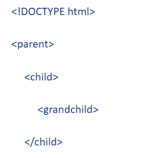
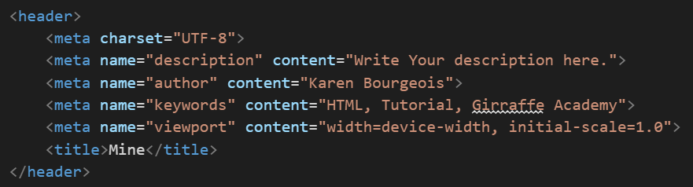
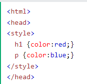
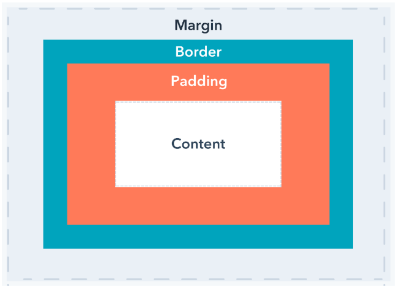
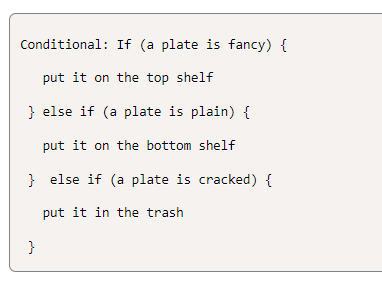

cd & cd .. - This is for moving around the file systems. Example: cd Name or cd .. to go back.
mkdir - This is for creating directories. Example: mkdir NameOfDirectory.
touch - Creates files and modifies metadata.
cp - Copies files.
mv - Moving files.
rm - Removes/deletes directories
curl - Download files found at specific URLs.
grep - Search for fragments of text inside larger bodies of text.
less, cat - View a file's contents page by page.
awk, tr, sed - Manipulate and transfrom streams of text (for example: changing all the
s in an HTML file to article).
ls, ls -l -- Lists directory contents.
wc - This is the word count.
git tells the computer that you are connecting wtih GitHub.
git pull is to bring the latest files from GitHub.
git push sends files to GitHub to then be merged.
git add . means to stage the files that you have made changes to.
git commit -m "Comment" gets the files ready to be sent with git push. Kind of like a save.
git status is as it says. It tells which stage you are at in working with the files.
HTML
The head element contains information about the webpage.
The body element represents the visible content shown to the user.
These elements are nested in between open and closing tags.
HTML stands for Hyper Text Mark-up Language.
!DOCTYPE html lets the browser know what type of document it is and version.
HTML tags are like a container and everything that has to do with your website/web app.
A parent is the first level of code. The HTML tag at the top is a parent.
A child is nested inside of a parent tag. The tag 'head' is a child of HTML.

br puts in a line break and not all the space creating a new line does.
hr put a horizontal rule line to seperate something like paragraphs or sections.
These to examples are call self-closing tags. They do not need a second like head and p does.
Comments are useful. They are done with open bracket!--- YOUR COMMENT ---closing bracket.
Lits are done with the following tags: ul, ol, li. They are not self closing.
Blocked items will take up the whole width of the screen.
Inline only takes up the amount of room need to display the content. Other items can sit next to one another.
Inline also means the formating inside the first tag brackets. Example: style.
Meta tags live inside the 'head' tags. This is where you can define information about the file. Meta tags are useful for
all kinds of things especially SEO.
Examples of Meta tags: Charset, Name, Content, Author.

'Link' creates the connection to the external file.
'rel' attribute specifies the relationship between the current document and the linked document resource.
The 'href' attribute specifies the location of the external resource.
CSS
CSS makes your site pretty.
It stands for Cascading Style Sheet.
This can be done inline, in the head tags using style tags or external.
This where you can use the classes and IDs to change certain things about your site.
A class: .CLASS_NAME, id: #ID_NAME.
The class can be used mulitple times; where the id cannot.
You can also use just the tag initials. Example: li, p, body.
Inline example: 'p style="color: red;"'.
In file example:

You can also play with the margins and padding to shape how your site looks.
Margin is around the outside of your content, border and padding.
Padding is directly around the content.
The following picture shows magins and padding.

Advanced CSS
@media - Media Queries
These allow you to do some cool things with your site.
An example: Changing the colour when the screen get to a certain size; labtop vs tablet vs phone.
Git
git status: checks what branch we are currently on
git checkout main will change the branch to main. If you want to change it to another branch, it's done the same
way.
git checkout -b branch-name: creates a new branch and switches to it
git pull brings information from github.
git push sends infromation to github.
git add -A stages the file for commit.
git commit sends the file to github.
Commit is followed my -m "YOUR MESSAGE" to let others know what changes you have made.
Branches are different versions of your file to be able to compare later in case you don't like something.
Pull Requests let you tell others about changes you've pushed to a branch in a repository on github.
A repository is where all of your project's files and each file's revision history is stored. Github is a cloud based
storage.
Git merge will combine multiple sequences of commits into one unified history; the main branch.
git clone is what you would do to make a copy on your local machine to work on; then you commit changes when you are
done.
You can use Git Pages to deploy your projects.
Deployment is when your projects are live and avaiable to the public.
It is not intended for business and must put a disclaimer that your site is just for educational purposes.
Zero sexual content.
More on Creating GitHub Pages
JavaScript
JavaScript makes your site: HTML(set-up), CSS(decorating), JavaScript(dancing).
Don't forget those blinking semicolons!!
JavaScript links should be in the body at the very end.
The 'sript' link has to be at the bottom just before the end because if it loads before your HTML that is suppose to be effected by that code, then there could be issues loading or performing that task.
addEventListener() function is if you need something to happen like a click.
querySelector() is like when you call a tag in CSS.
alert() creates a pop-up.
const is constant like in C#. They are imutable which means they cannot be changed.
Variables are like any language; a container. They are a place to store data until it is needed.
Syntax
- var name1; (undefined)
- var name1 = value1; (declared)
- var name1 = value1, name2 = value2;
A triple = sign tells the computer to return a boolean if the two variables are equal. This is a comparison operator
To set an image, you use the setAttribute() function with attributes; example: src, image adddress in quotes.
Function are like in C# and Python and do the same thing. So learn one and the rest come easier. You can recall them over and over without rewriting all that code over and over.
The 'let' function intializes the variable.
There are also the if/else statements that work the same. And use curly brackets like C#.
Comments for a multiple lines are done /* ending with */
Comments for a single line is is //.
A 'for' loop contiues to loop until the it has reached the goal and does this so you don't have to write all those lines of code
You need to put the data type to make a variable. example: var me = "Karen";
To intialize a variable, you need to use the word set.
If statements are similar to C#.

control flow is the order in which a computer executes code in a script.
Making a function - the word function and then the name, code block with the instructions, then call the function.
Fuction is a set of instructions that can be called upon many times without having to write out the same code many times.
Like CSS, it is easier to make a seperate file. Example: JavaScript.js
For js, a primitive is data that is not an object and has no methods or properties. There are seven typese: string, number, bigint, boolean, undefined, symbol, null.
All primitives are immutable; they cannot be altered. Some cufusion can happen. Priitive itself vs a variable assigned a primitive value.
Primitives have no methods, however, behave as if they do.
Scripts are linked at the bottom and this is because you want to load the HTML & CSS to sure all the buttons are in the right place so the JS can funtion properly.
Operator:
!== means not equal to
&& means 'and', both espressions have to be true or vice versa.
|| means 'or', example: if one of the varables is true then the answer is true
'Pipes' are found on the keyboard, sometimes over the backslash.
console.log(!Expression2); means not equal to.
Expressions can be stored in a variable: example: expression1 = (1!<0)
if... else if... else... are used to create conditional statements. Example:
It means if the variable is equal to 12, then it will print the phrase to the console, other wise, it will print the other phrase.
if (lunch === 12) {
console.log("Yay! I'm starving!");
}
else {
console.log("ah! man! It isn't lunch yet.");
}
Switch is also used here like in C# and works the same way. Default is the same as else.